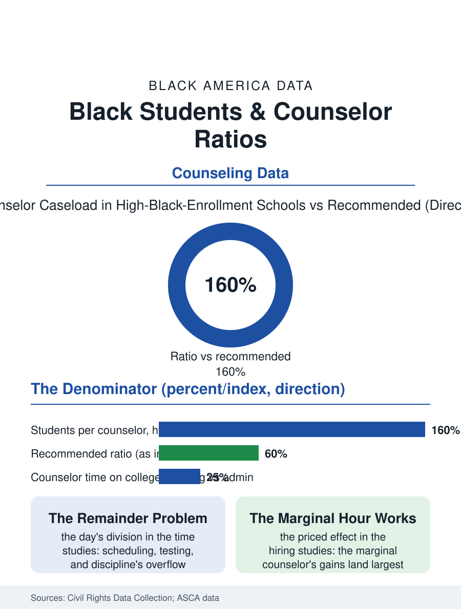

Black Education
Four Hundred to One: Black Students and Counselor Ratios
Four hundred names per counselor, the college conversation last in the day's queue, and the marginal hire's gains landing largest where the need is. The counselor file.

The school counselor is the pipeline's traffic officer, the adult who holds the course schedule, the college list, and the crisis in one caseload, and the caseload is the file: Black students attend schools where the counselor's ratio runs well above the profession's recommended two hundred fifty to one, and where the counselor's day is consumed by the schedule and the test administration the college conversation waits behind. This article reads the counselor ratio file.
Four Hundred to One
The national ratio in the school data runs near four hundred students per counselor, worse in the high-poverty and high-Black-enrollment schools of the civil rights data collection, against the association's recommended two fifty, so that the arithmetic of the individual attention the role promises, the college list built name by name, is defeated by the denominator before the counselor's quality is ever reached. The time allocation studies then show the denominator's content: the counselor's day divided among the scheduling, the testing coordination, the discipline's overflow, and the crisis response, with the college and career advising that the pipeline files depend on receiving the remainder, a remainder the first-generation student's need inverts, since the student whose family holds the college knowledge needs the counselor least and the student who needs her most holds the least claim on the calendar the testing file owns. The discipline adjacency is the file's contested ground: the counselor as the confidant and the counselor as the discipline system's officer are roles the student's trust must reconcile, and the schools that separate them, the therapist's office from the dean's process, post the utilization the merged role suppresses, the Black student's documented reluctance to bring the crisis to the office that also writes the referral being a data point about the design rather than the child. The group counseling tier is the ratio's relief valve in the profession's design, the counselor's hour spent with the cohort rather than the case, and the schools that formalized the group model post the caseload's effective division without the hire the budget cannot make, a partial answer the profession's literature marks as such.
What a Ratio Buys
The outcome studies price the ratio honestly: the additional counselor's effect, measured in the districts that hired at the margin, appears in the discipline incidents' decline, the college applications' rise, and the FAFSA file's completions, with the effects for the Black and low-income students running ahead of the average in the pattern of the support interventions generally, the marginal hour flowing to the unmet need. The counselor's own composition is the file's mirror: the school counseling profession's Black share runs near the teaching force's, its preparation programs' pipeline the same, and the concordance finding of the other files, the student's readier trust of the counselor who shares the background, prices the pipeline's diversity in the utilization data. The private supplement is the market's answer and the equity file's aggravation: the independent counselor, the college consultant of the affluent family's purchase, sells the ratio of ten to one against the public school's four hundred, the admissions file's arms race being, in this file's accounting, simply the ratio bought retail.
The Traffic Officer's Ledger
The counselor file closes on the funding's choice the ratio represents, because the counselor is a line the budget can count and the legislature can fund, and the states that have mandated or funded the ratio's improvement did so on the evidence this file assembles, the discipline and application effects being among the most legible in the support literature. The role's redefinition is the file's companion trend, the counselor released from the test coordination and the schedule's mechanics by the systems that automated them, the day's remainder, the advising itself, being the profession's own platform in its association's advocacy. The civil rights data count the ratios each cycle, the high-Black-enrollment school's figure the file's standing headline. The last entry is the office's door in the first week of October, the college list season, the line of seniors in the corridor with the folders, and the counselor's list of four hundred names of which the folders in the corridor are the fraction who found the door, the rest being the ratio's true constituency, whose applications the file counts in the FAFSA's unfinished column.
More in Black Education
Black Educational Attainment: High School Parity, the College Gap
About 89 percent of Black adults hold a high school diploma and one in four holds a bachelor's degree or higher — the attainment ladder, the college completion gap, and the generational trend.
Historically Black Colleges and Universities: Enrollment and Degrees
More than 100 HBCUs enroll roughly 290,000 students and award about one in six Black bachelor's degrees — an outsized share from a small sector. The federal education data.
Black College Enrollment: 2.4 Million Students
About 2.4 million Black students are enrolled in American colleges — nearly two-thirds of them women. The NCES enrollment data by sector, level, and trend.
Source: U.S. Department of Education, Civil Rights Data Collection; American School Counselor Association caseload and outcome research.